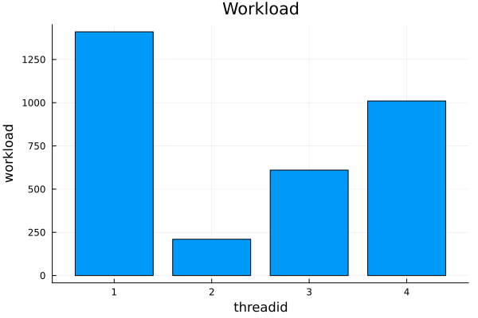
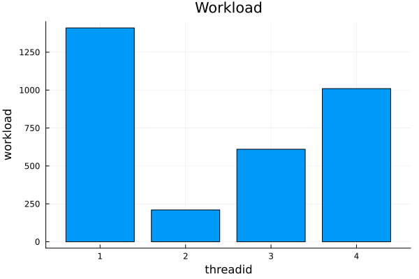

Multithreading
Contents
Multithreading#
What are threads?#
Threads are execution units within a process that can run simultaneously.

While processes are entirely separate, threads run in a shared memory space.
Starting Julia with multiple threads#
By default, Julia starts with a single user thread. We must tell it explicitly to start multiple user threads. There are two ways to do this:
Environment variable:
JULIA_NUM_THREADS=4Command line argument:
julia -t 4or, equivalently,julia --threads 4
Jupyter lab:
The simplest way is to globally set the environment variable JULIA_NUM_THREADS (e.g. in the .bashrc). But one can also create a specific Jupyter kernel for multithreaded Julia:
using IJulia
installkernel("Julia (4 threads)", env=Dict("JULIA_NUM_THREADS"=>"4"))
We can readily check how many threads we are running:
Threads.nthreads()
4
User threads vs default threads#
Technically, the Julia process is also spawning multiple threads already in “single-threaded” mode, like
a thread for unix signal listening
multiple OpenBLAS threads for BLAS/LAPACK operations
For this reason, we call the threads specified via --threads or the environment variable user threads or simply Julia threads.
Task-based multithreading#
Conceptually, Julia implements task-based multithreading. In this paradigm, a task - e.g. a computational piece of a code - is marked for parallel execution on any of the available Julia threads. Julias dynamic scheduler will automatically put the task on one of the threads and trigger the execution of the task on said thread.
Ideally, a user should think about tasks and not threads.
Advantages:
high-level and convenient
composability / nestability (Multithreaded code can call multithreaded code can call multithreaded code ….)
Disadvantages:
scheduling overhead
can get in the way when performance engineering
scheduler has limited information (e.g. about the system topology)
low-level profiling (e.g. with LIKWID) currently requires a known task -> thread -> cpu core mapping.
(Blog post: Announcing composable multi-threaded parallelism in Julia)
Spawning tasks on threads: Threads.@spawn#
Threads.@spawn spawns a task on a Julia thread. Specifically, it creates (and immediately returns) a Task and schedules it for execution on an available Julia thread.
Note the conceptual similarity between Threads.@spawn (task -> thread) and Distributed.@spawn (task -> process) and also @async.
To avoid having to prefix Threads. to @spawn (and other threading-related functions) let’s load everything from Base.Threads into global scope.
using Base.Threads
@spawn println("test")
test
Task (done) @0x00007f86a0d68e70
While Threads.@spawn returns the task right away - it is non-blocking - the result might only be fetchable after some time.
t = @spawn begin
sleep(3)
"result"
end
@time fetch(t)
2.964315 seconds (1.97 k allocations: 92.584 KiB, 0.14% compilation time)
"result"
Note that we can use (some of) the control flow tools that we’ve already covered, like @sync.
@sync t = @spawn begin
sleep(3)
"result"
end
@time fetch(t)
0.000005 seconds
"result"
for i in 1:2*nthreads()
@spawn println("Hi, I'm ", threadid())
end
Hi, I'm
Example: Recursive Fibonacci series#
We can nest @spawn calls freely!
function fib(n)
n < 2 && return n
t = @spawn fib(n - 2)
return fib(n - 1) + fetch(t)
end
1
fib (generic function with 1 method)
Hi, I'm 2
fib.(1:10)
Hi, I'm 2
Hi, I'm 2
Hi, I'm 4
Hi, I'm 2
Hi, I'm 2
Hi, I'm 3
10-element Vector{Int64}:
1
1
2
3
5
8
13
21
34
55
(Note: Algorithmically, this is a highly inefficient implementation of the Fibonacci series, of course!)
Example: tmap (like pmap)#
tmap(fn, itr) = map(fetch, map(i -> Threads.@spawn(fn(i)), itr))
tmap (generic function with 1 method)
using LinearAlgebra
M = [rand(200, 200) for i in 1:10];
tmap(svdvals, M)
10-element Vector{Vector{Float64}}:
[100.18753003677057, 7.954338580027477, 7.799496169524875, 7.73668042420593, 7.634122740128819, 7.591822369179419, 7.461364854317185, 7.412989799641095, 7.3887507750487, 7.2612019036929984 … 0.30216583487975857, 0.2721565543273664, 0.2492469722084963, 0.24266736646639847, 0.164231971505762, 0.1408025720619857, 0.11167266586018931, 0.08529620377143354, 0.03965571110773948, 0.025270907437001878]
[99.72266498644579, 8.038383714297046, 7.929902912765913, 7.720380404167318, 7.638325110932742, 7.517775090494831, 7.472316009296888, 7.429391395260527, 7.301099075310839, 7.235097483114681 … 0.3254966720906813, 0.29544829933322364, 0.22092652920874792, 0.1913481822687155, 0.13342849883234292, 0.11594004510246905, 0.08721174839437283, 0.057618052569368104, 0.04587248815153665, 0.012304705894112117]
[100.26423545752861, 7.846039960926511, 7.761656762616611, 7.672714410911166, 7.560665655070384, 7.5200907049038985, 7.438887776935963, 7.415082698617361, 7.34359006027998, 7.196236351007384 … 0.2894853889908623, 0.2877539902364475, 0.2392578428487053, 0.22088545113639468, 0.186632514422355, 0.12953994870806856, 0.12288125548092937, 0.09022353504119077, 0.06455550582567164, 0.022567172901382812]
[100.7351535142107, 8.104736824232814, 7.785102465795249, 7.7739943487466645, 7.586621475920657, 7.529594271406228, 7.422816337066247, 7.347802697740682, 7.302345267181595, 7.240739533370923 … 0.2657518359020054, 0.2235526103071246, 0.20358390228322046, 0.17990038973725422, 0.15785369121520446, 0.13581286997998884, 0.09505053689968501, 0.05603866282446173, 0.013888082547300272, 0.009832497162693072]
[99.65687856630687, 8.100635986067918, 7.866552734093791, 7.765265100458161, 7.661211734705458, 7.648890699599002, 7.519964646296056, 7.5079300688128185, 7.400209833920695, 7.291000277820431 … 0.31446685740377983, 0.2743756076252917, 0.24373133397824479, 0.18831972929017157, 0.16893027153543697, 0.1543366888937236, 0.10038067413446203, 0.07749585675049706, 0.05064213932373901, 0.01182119460395479]
[100.15656139652373, 7.989704786631509, 7.7813937027148175, 7.714919592756114, 7.604308381596281, 7.561934491056215, 7.461017822515681, 7.408681096315566, 7.240015926501659, 7.233440600134052 … 0.2775350702485027, 0.2443926380249544, 0.2025970890823358, 0.18511372859286024, 0.16323554946122334, 0.14722196604858293, 0.09986790985302114, 0.07690478598180561, 0.03373954919408757, 0.011337935557450005]
[99.94255308402387, 7.952815890093087, 7.87693694958658, 7.77696649029901, 7.667480246834756, 7.553846507260756, 7.459157337538008, 7.37467049793583, 7.309293165912781, 7.24181816288949 … 0.29671457546670593, 0.27559479146783133, 0.2690828740694836, 0.21890722894699138, 0.17810360546234127, 0.1733187724339112, 0.1471617655535554, 0.08770818241472596, 0.044117593889352755, 0.014399901883297596]
[100.38978768611237, 8.227264193629878, 7.788780879903722, 7.697852807901817, 7.5792982204704975, 7.462341615314579, 7.396345306470728, 7.3346311878329145, 7.255925501890166, 7.217966496260297 … 0.261402774092695, 0.24324423073039345, 0.22259437408975724, 0.19105754874332825, 0.16021740092679834, 0.1056926222650986, 0.08078658565002854, 0.04543063779072497, 0.022951295420719282, 0.0038718051554798476]
[99.75086075371578, 7.992232176485693, 7.889744133825719, 7.704918027813335, 7.630202181058535, 7.598650586255193, 7.473978869700278, 7.442141362453642, 7.31115952732727, 7.285960726891511 … 0.27789751722022854, 0.268405819647736, 0.2371341130378748, 0.21197664524098983, 0.17361993102442105, 0.14971144823064103, 0.12104846115854094, 0.07815994623024129, 0.05050264072683351, 0.024434857342934935]
[100.14093126134745, 8.119041336815048, 7.647937858146699, 7.627951677432744, 7.595474140435746, 7.492952058632752, 7.449636076741542, 7.390912816763872, 7.363796316159308, 7.201239046571712 … 0.32956398718219254, 0.2481812116472116, 0.23151500581770396, 0.19393670776559296, 0.19147999368471233, 0.16505598636366647, 0.12695602398013348, 0.07349344190925927, 0.0583058196210193, 0.03145617868095239]
tmap(i -> println(i, " ($(threadid()))"), 1:10);
3 (1)
6 (1)
1 (1)
7 (3)
10 (1)
8 (1)
2 (1)
5 (4)
9 (1)
4 (2)
Note, however, that this implementation creates temporary allocations and thus isn’t particularly efficient.
using BenchmarkTools
@btime tmap($svdvals, $M);
@btime map($svdvals, $M);
32.454 ms (145 allocations: 4.22 MiB)
62.055 ms (81 allocations: 4.22 MiB)
Remarks on @spawn#
Task migration: Not only does the scheduler dynamically assign tasks to Julia threads, but it is also free to move tasks between threads. Hence,
threadid()isn’t necessarily constant over time and should be used with care!Spawning tasks on specific threads: Julia doesn’t have a built-in tool for this (as of now). However, some packages like ThreadPinning.jl export
@tspawnat <threadid> ...which allows to spawn sticky tasks.
using ThreadPinning
@tspawnat 3 println("running on thread ", threadid())
Task (runnable) @0x00007f86a08c3260
Multithreading for-loops: @threads#
Higher level interface to multithreading. (Compare Distributed.@spawnat vs @distributed)
@threads for i in 1:2*nthreads()
println("Hi, I'm ", threadid())
end
running on thread 3
Hi, I'm 3
Hi, I'm 3
Hi, I'm 1
Hi, I'm 3
Hi, I'm 4
Hi, I'm 2
Hi, I'm 2
Hi, I'm 4
using BenchmarkTools
function square!(x)
for i in eachindex(x)
x[i] = x[i]^2
end
end
function square_threads!(x)
@threads for i in eachindex(x)
x[i] = x[i]^2
end
end
x = rand(1_000_000)
@btime square!($x);
@btime square_threads!($x);
317.294 μs (0 allocations: 0 bytes)
89.437 μs (25 allocations: 2.08 KiB)
Scheduling options#
Syntax: @threads [schedule] for ...
:dynamic(default)creates O(
nthreads()) many tasks each processing a contigious region of the iteration spaceeach task essentially spawned with
@spawn-> task migration
-> composability / nestability
:staticevenly splits up the iteration space and creates one task per block
statically maps tasks to threads, specifically: task 1 -> thread 1, task 2 -> thread 2, etc.
-> no task migration, i.e. fixed task-thread mapping
-> not composable / nestable
-> only little overhead
@threads :dynamic for i in 1:2*nthreads()
println(i, " -> thread ", threadid())
end
7 -> thread 3
8 -> thread 3
5 -> thread 1
3 -> thread 4
4 -> thread 4
6 -> thread 3
1 -> thread 2
2 -> thread 2
@threads :static for i in 1:2*nthreads()
println(i, " -> thread ", threadid())
end
3 -> thread 2
5 -> thread 3
1 -> thread 1
6 -> thread 3
2 -> thread 1
4 -> thread 2
7 -> thread 4
8 -> thread 4
For @threads :static, every thread handles precisely two iterations!
@threads :dynamic for i in 1:3
@threads :dynamic for j in 1:3
println("$i, $j")
end
end
1, 3
2, 1
3, 3
1, 1
1, 2
2, 2
3, 1
2, 3
3, 2
@threads :static for i in 1:3
@threads :static for j in 1:3
println("$i, $j")
end
end
TaskFailedException
nested task error: `@threads :static` cannot be used concurrently or nested
Stacktrace:
[1] error(s::String)
@ Base ./error.jl:35
[2] macro expansion
@ ./threadingconstructs.jl:91 [inlined]
[3] macro expansion
@ ./In[21]:2 [inlined]
[4] (::var"#161#threadsfor_fun#41"{var"#161#threadsfor_fun#39#42"{UnitRange{Int64}}})(tid::Int64; onethread::Bool)
@ Main ./threadingconstructs.jl:84
[5] #161#threadsfor_fun
@ ./threadingconstructs.jl:51 [inlined]
[6] (::Base.Threads.var"#1#2"{var"#161#threadsfor_fun#41"{var"#161#threadsfor_fun#39#42"{UnitRange{Int64}}}, Int64})()
@ Base.Threads ./threadingconstructs.jl:30
Stacktrace:
[1] wait
@ ./task.jl:345 [inlined]
[2] threading_run(fun::var"#161#threadsfor_fun#41"{var"#161#threadsfor_fun#39#42"{UnitRange{Int64}}}, static::Bool)
@ Base.Threads ./threadingconstructs.jl:38
[3] top-level scope
@ ./threadingconstructs.jl:93
Load-balancing#
function compute_nonuniform_spawn!(a, niter=zeros(Int, nthreads()), load=zeros(Int, nthreads()))
@sync for i in 1:length(a)
Threads.@spawn begin
a[i] = sum(abs2, rand() for j in 1:i)
# only for bookkeeping
niter[threadid()] += 1
load[threadid()] += i
end
end
return niter, load
end
compute_nonuniform_spawn! (generic function with 3 methods)
a = zeros(nthreads() * 20)
niter, load = compute_nonuniform_spawn!(a)
([1, 77, 1, 1], [17, 3206, 8, 9])
using Plots
b1 = bar(niter, xlab="threadid", ylab="# iterations", title="Number of iterations", legend=false)
b2 = bar(load, xlab="threadid", ylab="workload", title="Workload", legend=false)
display(b1)
display(b2)


function compute_nonuniform_threads!(a, niter=zeros(Int, nthreads()), load=zeros(Int, nthreads()))
@threads for i in 1:length(a)
a[i] = sum(abs2, rand() for j in 1:i)
# only for bookkeeping
niter[threadid()] += 1
load[threadid()] += i
end
return niter, load
end
compute_nonuniform_threads! (generic function with 3 methods)
a = zeros(nthreads() * 20)
niter, load = compute_nonuniform_threads!(a)
([20, 20, 20, 20], [1010, 210, 1410, 610])
b1 = bar(niter, xlab="threadid", ylab="# iterations", title="Number of iterations", legend=false)
b2 = bar(load, xlab="threadid", ylab="workload", title="Workload", legend=false)
display(b1)
display(b2)
 
(There might be a scheduling option for @threads that implements load-balancing in the future.)
Multithreading: Things to be aware of#
Race conditions and thread safety#
function sum_serial(x)
s = zero(eltype(x))
for i in eachindex(x)
@inbounds s += x[i]
end
return s
end
sum_serial (generic function with 1 method)
function sum_threads_naive(x)
s = zero(eltype(x))
@threads for i in eachindex(x)
@inbounds s += x[i]
end
return s
end
sum_threads_naive (generic function with 1 method)
numbers = rand(nthreads() * 10_000);
@show sum(numbers);
@show sum_serial(numbers);
@show sum_threads_naive(numbers);
sum(numbers) = 20109.221691779036
sum_serial(numbers) = 20109.22169177903
sum_threads_naive(numbers) = 5291.129590762232
Wrong result! Even worse, it’s non-deterministic and different every time! It’s also slow…
@btime sum_serial($numbers);
@btime sum_threads_naive($numbers);
53.491 μs (0 allocations: 0 bytes)
1.454 ms (80026 allocations: 1.22 MiB)
Reason: There is a race condition.
Note that race conditions aren’t specific to reductions. More generally, they can appear when multiple threads are modifying a shared “global” state simultaneously.
Not all of Julia and its packages in the ecosystem are thread-safe! In general, it is safer to assume that they’re not unless proven otherwise.
Fix 1: Divide the work#
function sum_threads_subsums(x)
blocksize = length(x) ÷ nthreads()
@assert isinteger(blocksize)
idcs = collect(Iterators.partition(1:length(x), blocksize))
subsums = zeros(eltype(x), nthreads())
@threads for tid in 1:nthreads()
for i in idcs[tid]
@inbounds subsums[tid] += x[i]
end
end
return sum(subsums)
end
sum_threads_subsums (generic function with 1 method)
@show sum(numbers);
@show sum_serial(numbers);
@show sum_threads_subsums(numbers);
sum(numbers) = 20109.221691779036
sum_serial(numbers) = 20109.22169177903
sum_threads_subsums(numbers) = 20109.221691779014
@btime sum_threads_subsums($numbers);
17.788 μs (26 allocations: 2.39 KiB)
Speedup and correct result. But not ideal:
cumbersome to do this manually
can have more subtle performance issues like false sharing
Fix 2: Atomics#
See Atomic Operations in the Julia doc for more information. But in generaly one shouldn’t avoid using them as much as possible since they actually limit the parallelism.
Garbage collection#
As of now, Julia’s GC is not parallel and doesn’t work nicely with multithreading.
If it gets triggered, it essentially “stops the world” (all threads) for clearing up memory.
Hence, when using multithreading, it is even more important to avoid heap allocations!
(If you can’t avoid allocations, consider using multiprocessing instead.)
High-level tools for parallel computing#
ThreadsX.jl#
Parallelized Base functions
using ThreadsX
sum(numbers)
20109.221691779036
ThreadsX.sum(numbers)
20109.221691779036
@btime ThreadsX.sum($numbers);
38.538 μs (263 allocations: 17.89 KiB)
FLoops.jl#
Fast sequential, threaded, and distributed for-loops for Julia
using FLoops
function sum_floops(x)
@floop for xi in x
@reduce(s = zero(eltype(x)) + xi)
end
return s
end
sum_floops (generic function with 1 method)
@btime sum_floops($numbers);
20.120 μs (31 allocations: 1.81 KiB)
numbers = rand(nthreads() * 10_000);
sum_floops(numbers) ≈ sum(numbers)
true
@btime sum_serial($numbers);
@btime sum_floops($numbers);
53.491 μs (0 allocations: 0 bytes)
19.913 μs (31 allocations: 1.81 KiB)
@floop supports different executors that allow for easy switching between serial and threaded execution
function sum_floops(x, executor)
@floop executor for xi in x
@reduce(s += xi)
end
return s
end
sum_floops (generic function with 2 methods)
@btime sum_floops($numbers, $(SequentialEx()));
@btime sum_floops($numbers, $(ThreadedEx()));
53.491 μs (0 allocations: 0 bytes)
19.124 μs (28 allocations: 1.77 KiB)
There are many more executors, like DistributedEx or CUDAEx. See, e.g., FoldsThreads.jl and FoldsCUDA.jl.
Under the hood, FLoops is built on top of Transducers.jl (i.e. it translates for-loop semantics into folds).
Tullio.jl#
Tullio is a very flexible einsum macro (Einstein notation)
using Tullio
A = rand(10, 10)
B = rand(10, 10)
C = @tullio C[i, j] := A[i, k] * B[k, j] # matrix multiplication
C ≈ A * B
true
sum_tullio(xs) = @tullio S := xs[i]
sum_tullio (generic function with 1 method)
@btime sum_tullio($numbers);
3.890 μs (0 allocations: 0 bytes)
(Uses fastmath and other tricks to be faster here.)
LoopVectorization.jl#
Macro(s) for vectorizing loops.
using LoopVectorization
function sum_turbo(x)
s = zero(eltype(x))
@tturbo for i in eachindex(x)
@inbounds s += x[i]
end
return s
end
sum_turbo (generic function with 1 method)
@btime sum_turbo($numbers);
3.624 μs (0 allocations: 0 bytes)
(Uses all kinds of SIMD tricks to be faster than the others.)
System topology and thread affinity#
Hawk compute node#

Not pinning threads (or pinning them badly) can degrade performance massively!
Pinning Julia threads to CPU threads#
What about external tools like numactl, taskset, etc.? Doesn’t work reliably because it can’t distinguish between Julia threads and other internal threads.
Options:
Environment variable:
JULIA_EXCLUSIVE=1(compact pinning)More control and convenient visualization: ThreadPinning.jl
compact: pin to cpu thread 0, 1, 2, 3, … one after anotherspread: alternate between sockets so, e.g., 0, 64, 1, 65, 2, 66, …. (if a socket has 64 cores)numa: same asspreadbut alternate between NUMA domains so, e.g., 0, 16, 32, 48, 64, …. (if a NUMA domain has 16 cores)Caveat: currently one works on Linux.